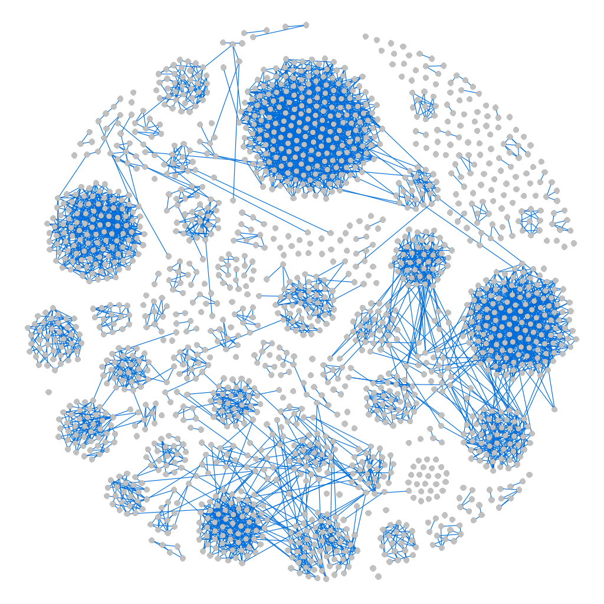
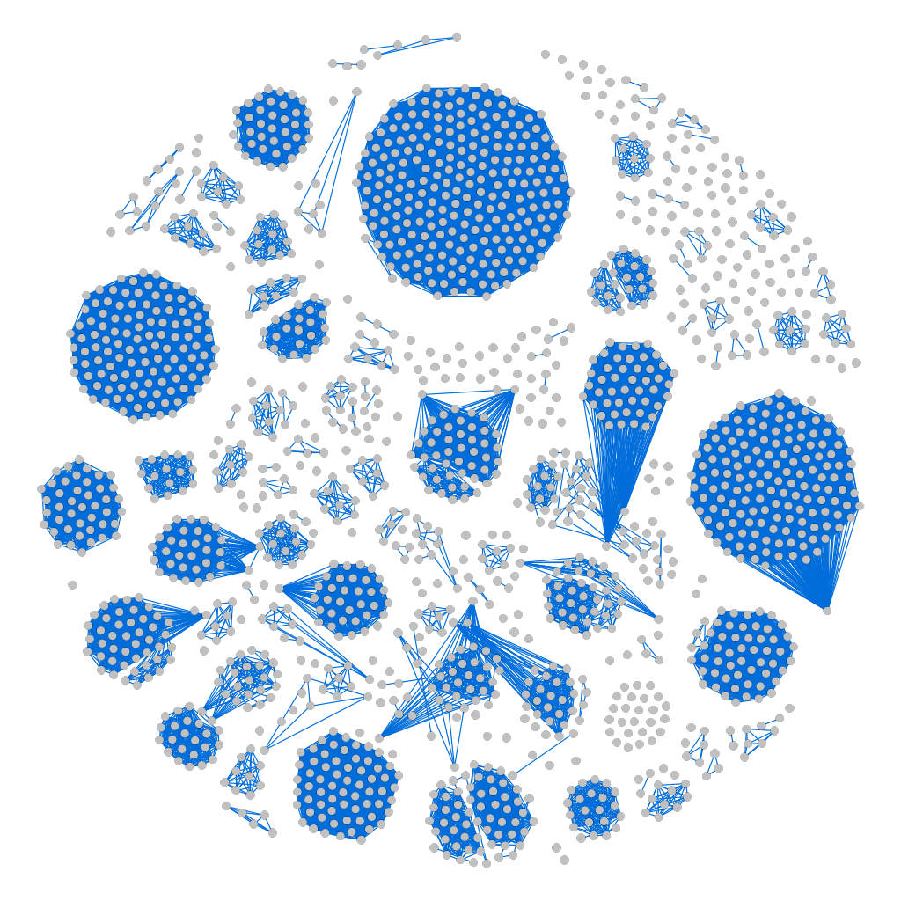
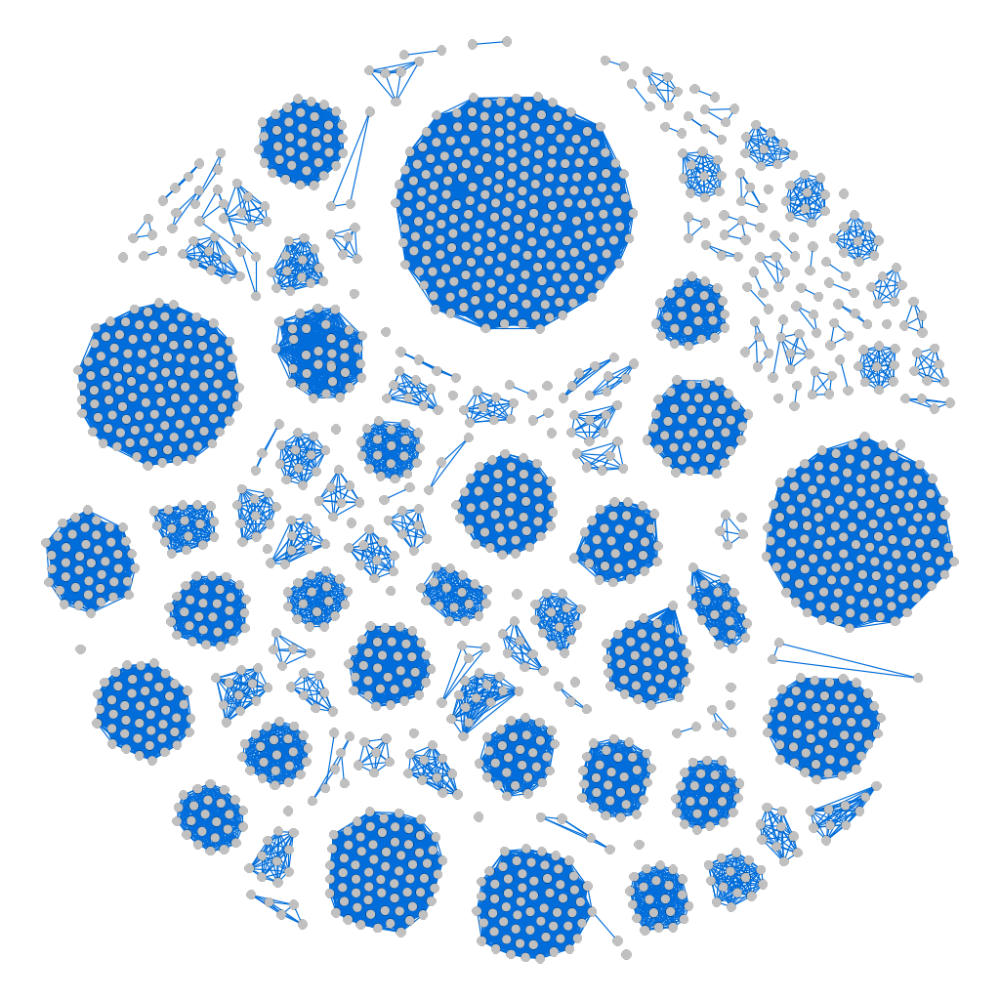
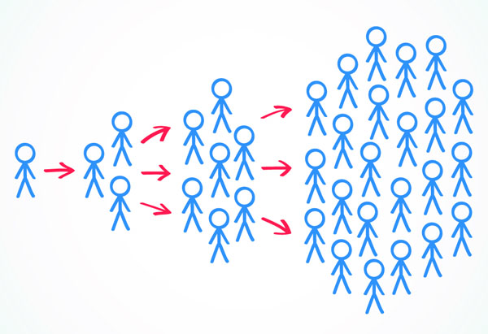
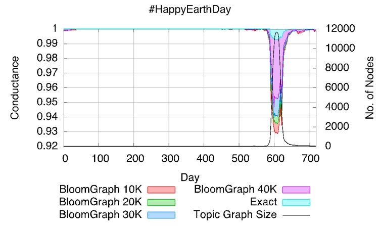
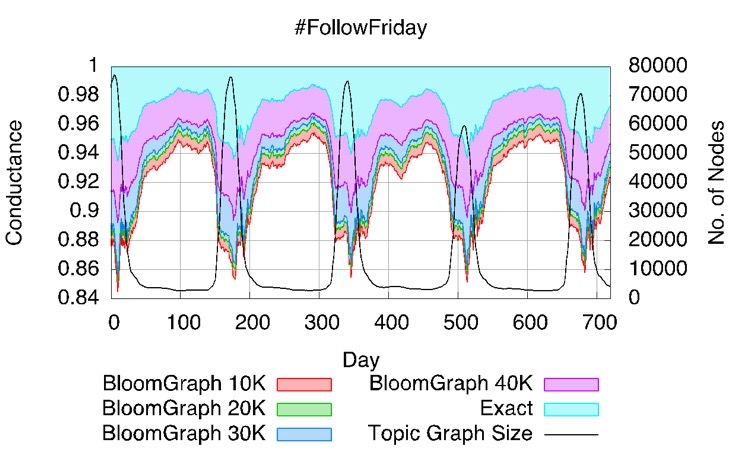

Research Projects
1) Entity Resolution with a noisy Oracle
 Entity resolution seeks to identify the records which refer to the same real world entity. It has been observed that the machine generated clusters from the set of records are approximate and can be misleading. Recently, many techniques have been devised to use the human inputs to get accurate clustering. The goal of this project is to devise robust algorithms to cluster the records which are resilient to the error in the answers returned by crowd.
Entity resolution seeks to identify the records which refer to the same real world entity. It has been observed that the machine generated clusters from the set of records are approximate and can be misleading. Recently, many techniques have been devised to use the human inputs to get accurate clustering. The goal of this project is to devise robust algorithms to cluster the records which are resilient to the error in the answers returned by crowd.  
Answers from oracle Clusters by our algorithm Ground Truth
2) Influence Maximization
Social networks have become an important part of everyone's life. The cascade of information flow over the network is one of the most important phenomenon observed over these networks. Identifying the most influential seed nodes to start such a cascade is an important and challenging problem which has played a pivotal role in viral marketing, outbreak detection, community formation, etc. In this project we have proposed a model to capture evolution of opinion as information propagates. We have devised scalable and efficient algorithms for detecting the most influential seed nodes in opinion aware and oblivious settings. These have been published in WWW 2015 and SIGMOD 2016. We are working on further improvements/extensions.There has been a plethora of work in this domain but we felt the need to clarify some of the important myths which have derailed the path of research. This work has been accepted in SIGMOD 2017.
3) Fairness Testing
 Software has become ubiquitous in our society, which, if unchecked would allow it to enforce stereotypes and discrimination. This project aims to develop methodologies and tools for testing fairness of software, identifying both correlation and causation of discrimination in software outcomes. We have devised Themis, an approach to measure discrimination and automatically generate an efficient test suite to perform these measurements.
Software has become ubiquitous in our society, which, if unchecked would allow it to enforce stereotypes and discrimination. This project aims to develop methodologies and tools for testing fairness of software, identifying both correlation and causation of discrimination in software outcomes. We have devised Themis, an approach to measure discrimination and automatically generate an efficient test suite to perform these measurements.
4) Graph Algorithms for analyzing evolving graphs
The rapid flow of information over the social media poses various challenges to analyze information in real time and provide useful insights. In this project we have devised BloomGraph, an efficient and compact data structure to represent graphs. We have used an algorithm for real time computation of conductance for the various topic graphs evolving over the social media. This algorithm leverages the functionality provided by BloomGraph. This work was presented in VLDB 2016. 